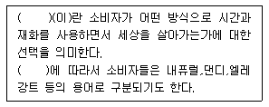
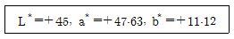

컬러리스트기사 (2012-08-26 기출문제)
1과목: 색채심리 마케팅
1. 색채 정보수집 방법의 설명으로 틀린 것은?
- 색채정보를 수집하기 위해 표본조사 방법이 가장 흔히 적용된다.
- 표본 추출은 편의(bias)가 없는 조사를 위해 무작위로 뽑아야 한다.
- 층화표본추출은 상위집단으로 분류한 뒤 상위집단별로 비례적으로 표본을 선정한다.
- 집락표본추출은 모집단을 모두 포괄하는 목록을 가지고 체계적으로 표본을 선정하는 방법이다.
(정답률: 42%)

2. 색채 선호에 관한 일반적인 이론과 가장 거리가 먼 것은?
- 남성은 여성에 비해 파랑을 선호한다.
- 연령이 낮을수록 고채도의 밝은 색을 선호한다.
- 아동기에 형성된 색채선호는 연령이 높아져도 변함이 없다.
- 인간의 지능과 정서가 상됨에 따라 단파장의 색을 선호한다.
(정답률: 알수없음)
3. 다품종 소량생산체제로 변화되는 최근의 시장은 표적마케팅을 지향한다. 표적 마케팅은 세 단계를 거쳐 이루어지는데 다음 중 옳은 것은?
- 시장 표적화 → 시장 세분화 → 시장의 위치 선정
- 시장 세분화 → 시장 표적화 → 시장의 위치 선정
- 시장의 위치 선정 → 시장 표적화 → 시장 세분화
- 틈새 시장분석 → 시장 세분화 → 시장의 위치 선정
(정답률: 47%)
4. 신제품 색채 설계를 위한 조사연구법에서 기업의 기획단계 및 행동 순서가 옳게 나열된 것은?
- 발상 → 제품색채기획 → 신제품 색채의 입안 → 모형작성 → 판매 계획
- 발상 → 제품색채기획 → 모형작성 → 신제품 색채의 입안 → 판매 계획
- 제품색채기획 → 발상 → 신제품 색채의 입안 → 모형작성 → 판매 계획
- 제품색체기획 → 발상 → 모형작성 → 신제품 색채의 입안 → 판매 계획
(정답률: 37%)
5. 제품수명주기 중 단위당 이익은 안정되나 경쟁의 증가로 총 이익은 하강하기 시작하는 시기는?
- 성숙기
- 성장기
- 도입기
- 쇠퇴기
(정답률: 알수없음)
6. 색채시장조사 기법에서 다루어지지 않는 분야는?
- 시장분석
- 시장구축
- 시장실사
- 시장실험
(정답률: 알수없음)
7. 상품의 색채계획에 영향을 미치는 색으로 사회,경제 및 시장상황을 바탕으로 소비자 선호색을 미리 예측하여 만들어지며 상품의 디자인시 중요하게 사용되는 색은?
- 상품색
- 유행색
- 지역색
- 전통색
(정답률: 70%)
8. SD(SemeticDifferentialMethod)법과 관련이 없는 것은?
- 이미지 조사방법으로 활용된다.
- 오스굿(C.EOsgoods)에 의해 고안되었다.
- 색채의 의미공간을 추출할 수 있다.
- 직관적으로 떠오르는 어휘를 말하는 방법이다.
(정답률: 50%)
9. 인간은 사회화 과정을 통하여 가치관, 욕구, 행동모델들의 형성을 통해 개인의 소비자 구매 행동에 영향을 미친다. 이 때 가장 폭 넓게 영향을 미치는 요인은?
- 문화적 요인
- 경제적 요인
- 심리적 요인
- 개인적 특성
(정답률: 25%)
10. 보기의 ( )안에 적합한 용어는?

- 소비유형
- 소비자행동
- 라이프스타일
- 문화체험
(정답률: 알수없음)
11. 사고와 재해를 감소시키기 위한 공장의 색채로 적합하지 않은 것은?
- 핸들은 주황색을 사용하여 주의를 환기시킨다.
- 기계색은 검정색을 사용하여 무게감을 준다.
- 정밀기계공장은 차분한 환경색을 사용한다.
- 고온에서 작업하는 공장은 한색을 환경색으로 사용한다.
(정답률: 55%)
12. 다음 중 SD법으로 감성의 요인을 분석할 때 개인의 차가 크고 각각의 속성 오차가 심해서 하나의 속성으로 색채를 사용하거나 속박하여 평가하는 것이 위험한 형용사 쌍은?
- 밝은 - 어두운
- 딱딱한 - 연한
- 자연스러운 - 부자연스러운
- 무거운 - 가벼운
(정답률: 50%)
13. 컬러 표현이 매우 중요한 색조화장품을 명확한 타깃에 감정적인 무드로 분위기 있게 표현하여 홍보하고자 할 때 가장 적합한 매체는?
- 신문
- 잡지
- DM
- TV
(정답률: 50%)
14. 색채의 상징에 대한 설명이 틀린 것은?
- 국기에서의 빨강은 정렬,혁명을 상징한다.
- 각 도시에서도 상징적인 색채를 대표색으로 사용할 수 있다.
- 차크라(chakra)에서 초록은 사랑과 “파” 음을 상징한다.
- 국기가 국가의 상징이 된 것은 1차 대전 이후이다.
(정답률: 39%)
15. 오프라인 매장의 색채계획을 온라인상의 웹사이트에도 그대로 적용하여 온라인 매장화로 소비자와의 긴밀한 유대관계를 형성하면서 시장을 이끌어가는 마케팅 전략은?
- 직감적 마케팅 전략
- 통합적 마케팅 전략
- 분석적 마케팅 전략
- 표적 마케팅 전략
(정답률: 47%)
16. 다음 중 사무실의 색채계획이 적합하지 않는 것은?
- 영업직의 사무실은 난색계로 활력을 준다.
- 정신적인 업무가 많은 사무실은 차분한 한색을 사용한다.
- 단조로운 업무가 많은 사무실은 선명한 색을 악센트로 사용한다.
- 창조적인 업무를 하는 사무실은 저채도의 한색을 사용한다.
(정답률: 64%)
17. 인간의 선행경험에 따라 다른 감각과 교류되는 색채감각을 경험하게 된다. 이에 대한 설명 중 틀린 것은?
- 뉴턴은 분광실험을 통해 발견한 7개 영역의 색과 7음계를 연결시켰으며, C음은 청색을 나타낸다.
- 색채와 모양의 추상적 관련성은 요하네스 이텐, 파버비렌, 칸딘스크, 베버와 페흐너에 의해 연구되었다.
- ‘브로드웨이 부기우기’라는 작품은 시각과 청각의 공감각을 활용하였으며, 색채 언어의 가능성을 보여주었다.
- 20대 여성을 겨냥한 핑크색 MP3의 시각적 촉감은 부드러움이 연상되며, 이와 같이 색채와 관련된 공감각을 활용하면 메시지와 의미를 보다 정확하게 전달할 수 있다.
(정답률: 43%)
18. 기업색채에 대한 설명으로 틀린 것은?
- 사람에게 불쾌감을 주지 않고 조화로운 색채
- 기업의 독특한 이미지를 살리기 위한 고명도,고채도의 색채
- 여러 가지 소재로 응용할 수 있으며 관리하기 쉬운 색채
- 눈에 띄기 쉽고 경쟁업체와의 차별성이 뛰어난 색채
(정답률: 알수없음)
19. 광고가 제작된 후 메시지를 전달할 매체 선정시 매체선정 요인이 아닌 것은?
- 도달률, 빈도,영향도의 결정
- 주된 매체유형의 선택
- 다수 매체 수단을 선택
- 매체시간의 선택
(정답률: 28%)
20. 색채 마케팅의 기능이 아닌 것은?
- 판매촉진
- 안정성 향상
- 경쟁상품과의 차별화
- 기업이나 제품의 이미지 구축
(정답률: 알수없음)
2과목: 색채디자인
21. 디자인 조건에 관한 내용이 잘못 연결된 것은?
- 합목적성 - 용도, 성능, 적합성, 기능성
- 독창성 - 창조성, 고유성, 시대정신
- 심미성 - 미의식, 형태와 색상, 유행
- 경제성 – 최대 재료, 최소 효과, 효율성
(정답률: 알수없음)
22. 19909년대 이후부터 현재까지 한국 산업디자인 발전의 경향을 가장 잘 설명한 것은?
- 조직적인 디자인 활동의 전재 시기
- 디자인 산업이 가장 큰 폭으로 성장한 시기
- 자연,인간, 환경의 조화를 추구하는 시기
- 산업디자인 저변확대로 디자인의 학술적 개발 시기
(정답률: 47%)
23. 다음 중 색채의 기능적 역할이 아닌 것은?
- 판별성의 높임
- 작업능률 향상 및 피로감을 줄임
- 시인성을 높여 알기 쉽게 함
- 즐거움을 부여함
(정답률: 50%)
24. 바지 위에 덧입는 튜닉 원피스나 코트, 긴 셔츠에 조끼와 스커트를 겹쳐 입는 방식으로 1970년대 히피들에 의해 반모드로 유행되었던 의상스타일로 층이 지게 착용하거나 여러겹을 겹쳐 입는 스타일은?
- 레이어드 룩(layeredlook)
- 드레스(dress)
- 뉴룩(newlook)
- 가르손느 룩(garconnelook)
(정답률: 알수없음)
25. 메이컵을 할 때 입술화장에 있어서 차분하고 수수하며 점잖아 보이고 엘레강스한 분위기에 잘 맞는 색조는?
- dull
- pale
- light
- vivid
(정답률: 알수없음)
26. 일반적으로 어떤 대상을 보고 느끼는 감각적 자극의 순서가 큰 것부터 작은 것의 순으로 옳게 나열된 것은?
- 질감 → 형태 → 색채
- 형태 → 색채 → 질감
- 색채 → 질감 → 형태
- 색채 → 형태 → 질감
(정답률: 54%)
27. 게슈탈드(Gestalt)의 원리 중 부분이 연결되지 않아도 완전하게 보려는 시각법칙은?
- 연속성(continuation)의 요인
- 근접성(proximlty)의 요인
- 유사성(similarity)의 요인
- 폐쇄성(closure)의 요인
(정답률: 알수없음)
28. 건축물의 경관색채 계획 시 고려사항으로 거리가 먼 것은?
- 사회성, 동일성, 공익성의 함유
- 공간과의 조화를 고려한 환경색
- 부분만을 강조한 독립적 색채계획
- 재료가 가지고 있는 자연색 존중
(정답률: 70%)
29. 포스트모더니즘 디자인 양식의 특징이 아닌 것은?
- 이전까지는 금기시한 다양한 사고와 소재를 사용하였다.
- 문화적 사양성의 가치를 인정하였다.
- 화려한 색상과 장식을 볼 수 있다.
- 미술과 디자인의 구별을 확실히 하였다.
(정답률: 50%)
30. 문화성을 고려한 디자인과 거리가 먼 것은?
- 지리적, 풍토적 환경을 고려한다.
- 민속적, 토속적 디자인과 관련된다.
- 생활습관과 전통을 고려한다.
- 자연친화적 디자인을 고려한다.
(정답률: 55%)
31. 디자인에 있어 색채계획(colorplanning)의 정의로 가장 적합한 것은?
- 색현상을 과학적으로 연구하여 빛과 도료의 원리를 밝혀내는 것이다.
- 색채 적용에 디자이너 개인의 기호를 최대한 반영하기 위한 설득과정이다.
- 디자인의 적용 상황을 연구하여 그것을 구체화하기 위한 색채를 선정하고 적용하는 과정을 말한다.
- 건물이나 설비 등에서 색채를 통한 안정을 찾고 눈이나 정신의 피로를 회복시키고 일의 능률을 향상시키는 목적을 갖는 활동이다.
(정답률: 34%)
32. 실내 디자인에 대한 설명으로 틀린 것은?
- 건물의 기능과 용도에 따라 과학적 자료와 기술적인 정보를 활용할 수 있어야 한다.
- 초기에는 실내장식(interiordecoration)의 의미만 가지고 있었다.
- 오늘날에는 계획,코디네이트(coordinate),전시 디자인의 개념을 내포하고 있다.
- 건축의 외장이 완성되기 이전에 반드시 실내 디자인을 끝내는 것이 일반적인 순서이다.
(정답률: 77%)
33. 디자인의 한 방법으로 ‘형태는 기능을 따른다’라는 명제와 관련이 없는 것은?
- 형태만 아름다우면 모든 기믕을 수용할 수 있다는 것이다.
- 기능에 충실한 형태가 아름답다는 것이다.
- 디자인의 기본 작업은 기능의 분석이라는 것이다.
- 미국의 건축가 루이스 설리번이 주장하였다.
(정답률: 알수없음)
34. 다음 중 신문광고 디자인의 특징에 해당되지 않는 것은?
- 독자에게 직접 전달되므로 구독자의 수와 독자층이 안정되어 있다.
- 보존성과 기록성이 우수하다.
- 광고주의 계획에 따라 광고의 집행이 가능하다.
- 움직이는 영상으로 표현할 수 있다.
(정답률: 67%)
35. 디자인의 조건 중 합목적성에 대한 설명이 틀린 것은?
- 합리주의에서는 궁극적 가치이다.
- 허용된 경비로 가장 우수한 디자인과 목적에 맞는 효과를 창출한다.
- 목적에 도달하는데 적합한 대상이나 행위의 설정이다.
- 지적인 문제의 일종으로 객관적, 합리적으로 얻어지는 것이다.
(정답률: 44%)
36. 다음 중 패션 디자인의 기능에 대한 설명으로 틀린 것은?
- 물리적 기능은 체온조절 기능과 신체적 쾌적함과 편안함이다.
- 사회적 기능은 사회적 지위표현, 타인으로부터 좋은 평가이다.
- 자기표현 기능은 자신의 개성표현과 자기만족이다.
- 상징적 커뮤니케이션 기능은 상징적 표현을 절제하는 것이다.
(정답률: 65%)
37. 카피(copy)의 종류 중 사진 또는 일러스트레이션의 짧은 설명문은?
- 헤드라인(headling)
- 바디카피(bodycopy)
- 슬로건(slogan)
- 캡션(caption)
(정답률: 39%)
38. 공공환경에서 대상에 따른 색채적용 시 고려해야 할 조건이 아닌 것은?
- 대상과 보는 사람과의 거리
- 선호도
- 면적효과
- 공공성의 정도
(정답률: 30%)
39. 4계절 이론과 퍼스널 팔레트에 대한 설명이 틀린 것은?
- 4계절 팔레트는 4계절의 이미지에 비유하여 신체색을 분류하는 방법을 활용하고 있다.
- 퍼스널 팔레트는 파랑과 회색을 중심으로 명도가 높고 부드러운 색은 겨울 이미지로 구분하였다.
- 퍼스널 팔레트는 개인의 색채를 따뜻한 색 그룹과 차가운색의 그룹으로 구분하였다.
- 4계절 팔레트 이론은 독일의 바우하우스 교수인 요하네스이텐에 의해 시작되었다.
(정답률: 25%)
40. 다음 중 개인의 선호와 유행의 영향을 받아 수명이 짧고 변화가 가장 빨리 나타나는 색채제품영역은?
- 패션 색채
- 인테리어 색채
- 전자제품 색채
- 멀티미디어 색채
(정답률: 알수없음)
3과목: 색채관리
41. 측색에 대한 설명 중 틀린 것은?
- 측색은 눈 또는 기기를 이용하여야 한다.
- 측색은 유동체인 빛을 측정하는 것이므로 한 번에 정확하게 측정하여야 한다.
- 육안으로 측색하는 경우 그날의 기분이나 자신의 사용목적에 따라 달라지므로 객관적인 조건이 필요하다.
- 측색의 목적은 정확하게 색을 파악하고, 색을 전달하고,재현하기 위함이다.
(정답률: 54%)
42. 색채 영상을 입력하거나, 생성된 색채 영상을 디스플레이하는 기본 디지털 색채가 아닌 것은?
- 빨강(Red)
- 노랑(Yellow)
- 녹색(Green)
- 파랑(Blue)
(정답률: 70%)
43. 다양한 광색의 연출이 가능하며, 주광색은 비교적 연색성이 좋고, 수명이 길고, 램프의 교체가 용이해 많이 쓰이는 광원은?
- 백열등
- 수은등
- 형광등
- 나트륨등
(정답률: 34%)
44. 모니터의 색조정에 관한 설명으로 틀린 것은?(오류 신고가 접수된 문제입니다. 반드시 정답과 해설을 확인하시기 바랍니다.)
- 색채 교정용 소프트웨어 사용시 분석대상은 빨강, 녹색, 파랑, 검정색이다.
- 모니터의 색온도가 높아질수록 시감은 따뜻한 색에서 차가운색으로 변한다.
- RGB각각에 R=0, G=0,B=0의 수치를 주어 디스플레이하면 전압 영역이 검은색이 된다.
- RGB각각에 R=225, G=225, B=225의 수치를 주어 디스플레이하면 전체 화면이 흰색이 된다.
(정답률: 29%)
45. 정확한 색채측정이 대한 설명이 틀린 것은?
- SCI방식은 광택 성분을 포함하여 측정하는 방식이다.
- 백색 기준물을 먼저 측정하여 기기를 교정시킨 후 측정한다.
- 측정용 표준 광원으로 A, D65, C광원의 사용이 가능하다.
- 기준물의 분광 반사율은 측정방식(geometry)과 무관한 일정한 값을 갖는다.
(정답률: 50%)
46. 광원에 대한 측정은 인간의 눈을 기준으로 하고, 이를 광측정이라 하며 4가지 측정량을 기본으로 한다. 다음 중 4가지 측정량은?
- 전광속, 선명도, 휘도, 광도
- 전광속, 색도, 휘도, 광도
- 전광속, 광택도, 휘도, 광도
- 전광속, 조도, 휘도, 광도
(정답률: 40%)
47. 한국산업표준에서 규정하고 있는 육안검색의 물체색이 되는 대상물과 관찰자와의 측정각은?
- 45°
- 90°
- 60°
- 35°
(정답률: 알수없음)
48. 컬러 인덱스 인터내셔널에서 제공하는 컬러 인덱스에서 얻을수 있는 정보가 아닌 것은?
- 염료와 안료에 대한 화학적인 구조를 알 수 있다.
- KS,CIE규정 등 색채 표준에 대한 정보를 제공한다.
- 염료와 안료의 활용방법과 견뢰성을 알 수 있다.
- 제조사의 이름뿐만 아니라 판매업체에 관한 정보도 얻을 수 있다.
(정답률: 알수없음)
49. 염료와 안료에 대한 설명이 틀린 것은?
- 색료가 성유와 친화력을 갖고 있어 별도의 고착제가 필요하지 않은 경우를 염료라고 한다.
- 집 벽에 붙어 있는 도료막과 같이 고착제 내부에 들어있는 색료를 안료라고 한다.
- 착색된 플라스틱의 경우 안료가 분산되어 있는 경우이다.
- 안료를 이용하여 착색을 할 경우 친화력이 강도에 따라 드러나는 색채의 농도가 다르게 나타난다.
(정답률: 알수없음)
50. 인간의 원추세포는 100cd/m2 이상이 되어야 정상적으로 활동한다. 육안조색시 색채관측에 가장 적당한 조도는?
- 10lx
- 100lx
- 1000lx
- 10000lx
(정답률: 50%)
51. 육류, 소시지 등에 적색광원을 사용하면 보다 선명해져 맛있게 보이도록 하는 것은 어떤 현상을 이용한 것인가?
- 연색성의 변화
- 색음현상
- 조건등색
- 색의 항상성
(정답률: 34%)
52. 다음 중 분광식 색채계의 장점은?
- 측정이 간편하고 구조가 간단하여 비교적 장비가 저렴하다.
- 시료의 분광반사율을 측정하므로 다양한 광원과 시야에서의 색채값을 동시에 산출해낼 수 있다.
- 현장에서의 색채관리,이동형 색채계로 많이 활요되고 있으며 색채계(colordifferencemeter)로 많이 활용된다.
- 백색기준믈의 . 색좌표를 기준으로 측색하므로 오염이 적다.
(정답률: 알수없음)
53. 디지털 이미지가 프린터에서 재생되는데 이때의 3가지 색상에 속하는 것은?
- 빨강(Red), 그린(green), 파랑(blue)
- 그린(green), 파랑(blue), 마젠타(magenta)
- 시안(cyan), 마젠타(magenta), 노랑(yellow)
- 시안(cyan), 마젠타(magenta), 빨강(red)
(정답률: 알수없음)
54. 2004년 CIEColorimetry(15.3)조항에서 CIELABDE5.0이하의 미세한 색차에 대하여 사용하도록 추천하는 색차식은?
- FMC색차식
- CIEDE94 색차식
- CIEDE2000색차식
- CMC색차식
(정답률: 46%)
55. 고압가스방전에 의한 빛을 이용한 광원으로서 평균 주광의 에너지 분포와 매우 닮은 특색이 있는 광원은?
- LED(LightEmittingDiode)
- 크세논(Xenon)램프
- 형광(Fluorescent)램프
- 할로겐(halogen)램프
(정답률: 알수없음)
56. 디지털 입력 시스템에 관한 설명으로 옳은 것은?
- PMT(광전배증관 드럼스캐닝)는 유연한 원본들을 스캔할 수 있다.
- A/D컨버터는 디지털 전압을 아날로그 전압으로 전환시킨다.
- 불투면도(opacity)는 투과도(T)와 반비례하고 반사도(R)와는 비례한다.
- CCD센서들은 녹색, 파란색, 빨간색에 대하여 균등한 민감도를 가진다.
(정답률: 6%)
57. 기준색의 CIELAB좌표가 (57,23,0)이고, 샘플색의 좌표는 (53,20,-8)이다. 샘플색은 기준색에 비하여 어떠한가?
- 기준색보다 약간 밝다.
- 기준색보다 붉은기를 더 띤다.
- 기준색보다 노란기를 더 띤다.
- 기분색보다 청록기를 더 띤다.
(정답률: 알수없음)
58. 육안조색시 필요한 준비물에 대한 설명이 틀린 것은?
- 측색기 : 삼자극치 L*a*b*값을 측정한다.
- 은폐율지 : 도막의 은폐정도를 검사한다.
- 표준광원 : 메타메리즘을 방지한다.
- 어플리케이터 : 도료를 잘 혼합시키고, 농도를 측정한다.
(정답률: 알수없음)
59. 다음 중 GammaCorrection에 대한 설명으로 틀린 것은?
- CRT모니터의 출력 휘도가 입력 RGB값의 크기와 비례하지 않아서 발생한 색의 왜곡을 보정하기 위한 방법이다.
- 감마가 낮은 영상은 감마가 높은 영상에 비해 중간톤의 상대적 밝기가 더 낮아 전체적으로 어둡게 보인다.
- 감마곡선은 입력신호가 0부터 255까지 증가할 때 최대 휘도를 1로 규격화 하여 상대적인 휘도 변화를 나타낸다.
- 일반적인 컴퓨터 모니터의 디스플레이는 2~3의 감마를 나타내지만 1.8의 감마를 사용하는 경우도 있다.
(정답률: 19%)
60. 색채 소재에 대한 설명 중 틀리 것은?
- 염료를 사용할수록 가시광선의 흡수율은 떨어진다.
- 염료로서의 역할을 하기 위해서는 외부의 빛에 안정되어야한다.
- 가공하지 않은 상태에서의 무명천은 브라운 빛의 노란색을 띤다.
- 합성안료로 색을 낼 때는 입자의 크기가 중요하므로 크기를 조절한다.
(정답률: 39%)
4과목: 색채지각론
61. 두 개 이상의 색광을 동시에 투사하여 스펙트럼이 망막의 동일 부위에 겹쳐 합성된 결과를 지각하게 하는 방법은?
- 동시가법혼색
- 동시계시혼색
- 동시감법혼색
- 동시병치혼색
(정답률: 알수없음)
62. 색채 지각과 관련한 눈의 구조와 기능에 대한 설명으로 틀린 것은?
- 수정체는 볼록한 렌즈모양으로 망막 위에 상을 맺게 하는 렌즈 역할을 한다.
- 홍채는 눈으로 들어오는 빛의 양을 조절한다.
- 망막의 맹점에는 광수용기가 있어서 대상을 볼 수 있다.
- 각막과 수정체는 빛을 굴절시켜 망막에 선명한 상이 맺도록 한다.
(정답률: 알수없음)
63. 다음 가법혼색에서 혼색한 결과가 틀린 것은?
- blue+green=cyan
- green+red=yellow
- cyan+red=magenta
- blue+green+red=white
(정답률: 50%)
64. 눈에 비쳤던 색자극이 제거된 후에 원래 자극과 반대의 색이 나타나는 잔상을 의미하는 것이 아닌 것은?
- 물리보색
- 심리보색
- 잔상보색
- 생리보색
(정답률: 알수없음)
65. 색채지각과 감정효과에 관한 내용 중 옳은 것은?
- 난색 : 진출색 – 팽창색 - 흥분색
- 난색 : 진출색 – 수축색 - 진정색
- 한색 : 후퇴색 – 수축색 - 흥분색
- 한색 : 후퇴색 – 팽창색 - 진정색
(정답률: 64%)
66. 명시성에 대한 설명으로 틀린 것은?
- 색의 식별력에 대한 시각의 성질을 명시성이라 한다.
- 배경과 도형의 관계에서 상대적 명도차에 영향을 받는다.
- 주의를 기울이지 않더라도 사람의 시선을 끌어 눈에 띠는 속성을 말한다.
- 조명상태가 명시성 효과에 영향을 줄 수 있다.
(정답률: 28%)
67. 색의 감정적 효과에 영향을 미치는 요소와 속성의 연결이 틀린 것은?
- 온도감 – 색상
- 중량감 – 명도
- 흥분과 침정 - 명도
- 화려함과 수수함 - 채도
(정답률: 34%)
68. 다음 중 가장 차갑게 느껴지는 색은?
- 주황
- 연두
- 초록
- 파랑
(정답률: 65%)
69. 물리보색에 관한 설명으로 틀린 것은?
- 색상환에서 가장 거리가 먼 색이 물리보색이다.
- 보색이 되는 두 색광을 색도그림의 백색점을 지나는 임의 직선위의 양쪽에 있다.
- 보색관계의 두 색광은 색도그림의 백색점을 지나는 임의 직선위의 양쪽에 있다.
- 어떤 색을 한참 바라본 후 흰색 면을 보면 음성잔상이 나타난다.
(정답률: 알수없음)
70. 다음 중 색음현상과 관련이 없는 것은?
- 주위색의 보색이 중심에 있는 색에 겹쳐져 보이는 현상으로 괴테 현상이라고도 한다.
- 작은 면적의 회색이 고채도의 색으로 둘러싸일 때 회색은 유채색의 보색을 띠는 현상으로,이는 색의 대비로 설명된다.
- 양초의 빨간 빛에 의해 생기는 그림자가 보색인 청록으로 보이는 현상이다.
- 같은 명소시라도 빛의 강도가 변화하면 색광의 색상이 다르게 보이는 현상이다.
(정답률: 알수없음)
71. 다음 색채지각효과중 특성이 다른 것은?
- 동화효과
- 줄눈효과
- 베졸드효과
- 대비효과
(정답률: 50%)
72. 색채의 경연감에 관한 설명이 틀린 것은?
- 밝고 채도가 낮은 난색은 부드러운 느낌을 준다.
- 색채의 경연감은 주로 명도와 관련이 있다.
- 채도가 높은 한색은 딱딱한 느낌을 준다.
- 어두운 한색은 딱딱한 느낌을 준다.
(정답률: 46%)
73. 색의 물리적 분류가 잘못 연결된 것은?
- 광원색 : 전구나 불꽃처럼 발광을 통해 보이는 색이다.
- 경영색 : 거울처럼 완전반사를 통하여 표면에 비치는 색이다.
- 공간색 : 맑고 푸른 하늘과 같이 순수하게 색만이 있는 느낌으로서 깊이가 애매모호하다.
- 표면색 : 반사물체의 표면에서 보이는 색으로 불투명감, 재질감 등이 있다.
(정답률: 44%)
74. 시지각 원리에 근거를 두고 시지각,잔상효과 및 색채의 물리적, 심리적 효과를 적극적으로 활용한 미술사조는?
- 포스트모던(PostModern)
- 팝아트(PopArt)
- 옵아트(OpArt)
- 구성주의(Constructivism)
(정답률: 18%)
75. 흔색에 대한 설명으로 홇은 것은?
- 병치흔색의 경우 흔색의 명도는 최대 면적의 원색명도와 일치한다.
- 컬러 인쇄의 경우 일부분을 확대하여 보면 점의 색은 빨강, 녹색, 파랑으로 되어 있다.
- 색필터를 겹치면 감법흔색이 나타난다.
- 중간흔색은 감법흔색의 영역에 속한다.
(정답률: 알수없음)
76. 자극의 세기아 시감각의 관계에서 자극이 강할수록 시감각의 반응도 크고 빠르므로 장파장이 단파장보다 빠르게 반응한다는 현상(효과)은?
- 색음(色陰)현상
- 푸르킨예 현상
- 브로커 슐처 현상
- 헌트효과
(정답률: 알수없음)
77. 간상체에 관한 설명으로 옳은 것은?
- 중심와에 집중 분포한다.
- 명암을 지각할 수 있다.
- 3가지 종류로 구분되어 있다.
- 주로 색을 식별하는 역할을 한다.
(정답률: 알수없음)
78. 빛에 대한 눈의 작용에 관한 설명 중 틀린 것은?
- 밝은 상태에서 어두운 상태로 바뀔 때 시감도가 증가하는 것은 명순응이라 하고,그 반대의 경우를 암순응이라 한다.
- 밝았던 조명이 어둡게 바뀌면 처음에는 아무것도 보이지 않다가 시간이 차차 지나면서 대상을 지각할 수 있게 되는데 이는 어둠 속에서 보내는 시간이 길어지면서 시감도가 증가하기 때문이다.
- 간상체와 추상체는 빛의 강도가 서로 다른 조건에서 활동한다.
- 간상체 시각은 약 500nm의 빛에 가장 민감하며,추상체 시각은 약 560nm의 빛에 가장 민감하다.
(정답률: 60%)
79. 색채학에 대한 여러 가지 접근법에 대한 설명이 잘못 짝지어진 것은?
- 물리학적 접근 – 광원, 반사광, 투과광 등 에너지 분포의 양상과 자극 정도를 기자재를 활용하여 규명한다.
- 화학적 접근 – 조색, 색좌표, 도료의 종류와 특성 색소 등을 개발한다.
- 생리학적 접근 – 눈에서 대뇌에 이르는 신경계통의 광화학적 활동을 규명한다.
- 심리학적 접근 – 색의 삼소성과 관련한 빛의 물리량과 그것에 대응하는 감각을 연구한다.
(정답률: 40%)
80. 색(色뜻)과 색채(色彩)에 대한 설명이 옳은 것은?
- 빛이 우리 눈의 망막을 자극시켜 생겨나는 물리적 현상을 색이라 한다.
- 색은 물리적인 현상과 더불어 생리적이고 심리적인 현상에 의하여 성립되는 시감각이다.
- 빛이 물체를 비루었을 때 생겨나는 반사, 흡수, 투과 등의 과정을 통해 생기는 물리적인 지각현상을 색채라 한다.
- 색채의 개념에는 무채색이 포함된다.
(정답률: 30%)
5과목: 색채체계론
81. 문·스펜서(Moon·Spencer)의 색채조화론 중 색상이나 명도, 채도의 차이가 아주 가까운 애매한 배색으로 불쾌감을 주는 범위는?
- 유사조화
- 눈부심
- 제1부조화
- 제2부조화
(정답률: 알수없음)
82. 다음 중 가장 선명한 빨강은?
- 7R4/2
- 5R4/12
- 5R8/2
- 2.5R3/8
(정답률: 알수없음)
83. CIELAB(L*a*b*)의 설명으로 틀린 것은?
- 명도지수는 L*로 나타낸다.
- CIELUV공간과 수식으로 호환된다.
- 색도지수는 a*b*로 나타낸다.
- +b*는 파란색 바향이다.
(정답률: 42%)
84. NCS색체계의 S2030-Y90R색상에 대한 옳은 설명은?
- 90%의 노란색도를 지니고 있는 빨간색
- 노란색도 20%,빨간색도 30%를 지니고 있는 주황색
- 90%의 빨간색도를 지니고 있는 노란색
- 빨간색도 20%,노란색도 30%를 지니고 있는 주황색
(정답률: 59%)
85. 다음 중 시감 반사율 Y값 18과 가장 유사한 먼셀 기호는?
- N1
- N3
- N5
- N7
(정답률: 알수없음)
86. 오스트발트 색체계에 대한 설명이 틀린 것은?
- 흑색량(B)+백색량(W)+순색(C)=100이 되는 혼합비에 의해 구성되어 있다.
- 등백계열은 등색상삼각형에 있어 순색(C)과 흑색량(B)이 평행선상에 있는 색이다.
- 등백색, 등흑색, 등순색, 등가색환계열에서 선택된 색은 모두 조화한다.
- 등순계열은 등색상삼각형에서 백색량(W), 순색(C)의 평행선상에 있는 색으로 순색이 모두 같게 보이는 계열이다.
(정답률: 10%)
87. 다음의 관용색명 중 색명의 유래가 동물에서 따온 것은?
- 세피아(sepia)
- 밤색(maroon)
- 팬지색(pansy)
- 라벤더색(lavender)
(정답률: 알수없음)
88. 다음 중 독일에서 체계화된 색채계가 아닌 것은?
- DIN
- RAL
- NCS
- 오스트발트
(정답률: 42%)
89. 다음의 명도 표기 중 가장 밝은 색채는?
- N=7
- L*=65
- Y=9.5
- D=2
(정답률: 20%)
90. ISCC-NIST색명법의 톤 기호의 약호와 풀이가 틀린 것은?
- vp–pverypaie
- m-moderate
- v-vivid
- d-deep
(정답률: 50%)
91. ISCC-NIST일반색명에서 톤(Tone)분류법의 특징이 아닌 것은?
- 색채 재현이 쉽다.
- 색채를 기억하기 쉽다.
- 색상의 범위를 지적하기 쉽다.
- 조화를 생각하기 쉽다.
(정답률: 29%)
92. 쉐뷰럴(Chevreul)의 색채조화론에 대한 설명으로 옳은 것은?
- 색의 조화와 대비의 법칙을 사용한다.
- 조화는 질서와 같다.
- 동일 색상이 조화가 좋다.
- 순색,흰색,검정을 결합하여 4종류의 색을 만든다.
(정답률: 알수없음)
93. 국제 조명위원회(CIE)에서 규정한 표준광의 설명으로 옳은 것은?
- 표준광 C는 북위 40°지접의 밝은 날 아침 9시 자연광이다.
- 주관적인 색채 측정의 오차를 줄이기 위하여 육안검사를 배제한다.
- 표준광 B는 텅스텐 할로겐 램프로 쉽게 만들 수 있어 널리 활용된다.
- 1931년 CIE에서 광원,물체,수용기의 표준화를 정의하였다.
(정답률: 알수없음)
94. 우리나라 전통 배색에서 나타나는 분선과 먹선의 효과는?
- 민가에 나타나는 자연목재와 석화로 이루어진 대청 공간이 가지는 단아한 이미지 효과
- 단청에서 나타나는 빨강과 파랑,파랑과 노랑의 조화된 배색 효과
- 한 가지 색으로 채색할 때 톤의 변화를 2단계 또는 3단계로하여 입체감을 부여하는 효과
- 여러 색을 배색할 때 세선 형태로 사용하여 강한 색 사이에서 색감을 돋보이게 하는 효과
(정답률: 20%)
95. 파버 비렌(FaberBirren)의 색채조화방법에 대한 설명이 옳은 것은?
- tint–itone–nshade : 가장 세련된 배색으로 레오나르도 다빈치에 의해 시도되었다.
- color–oshade-black : 인상주의 화가가 사용하였고, 깨끗하고 신선하게 보인다.
- color–otint–nwhtie : 색조의 깊이와 풍부함이 있고 렘브란트가 주로 사용하였다.
- white–hgray–ablack : 부조화를 찾기는 불가능하고, 깊이가 있어 명암법이라 불린다.
(정답률: 0%)
96. 혼색계 시스템의 이론에 기초를 둔 연구를 한 학자들로 나열된 것은?
- 토마스 영, 헤링, 괴테
- 뉴턴, 헬름홀츠, 맥스웰
- 쉐뷰럴, 헬름홀츠, 맥스웰
- 도마스영, 쉐브럴, 비렌
(정답률: 알수없음)
97. CIELAB표색시스템의 색도좌표계에서 다음과 같이 읽은 색은 어떤 색에 가장 가까운가?

- 노랑
- 파랑
- 녹색
- 빨강
(정답률: 34%)
98. 정색과 정색의 혼합으로 생기는 오간색의 생성에 대한 설명 중 옳은 것은?
- 자색은 청황색으로 동방,중앙의 간색이다.
- 홍색은 적백색으로 남방,서방의 간색이다.
- 녹색은 청백(담청)색으로 서방,동방의 간색이다.
- 벽색은 적 흑생으로 남방,북방의 간색이다.
(정답률: 37%)
99. 오스트발트 색상환의 4가지 기준색이 아닌 것은?
- Yellow
- Red
- Purple
- SeaGreen
(정답률: 알수없음)
100. 한국산업표준에서 ‘흐림 초록’에 해당하는 기호는?
- 5GY7/10
- 2.5G9/2
- 7.5G8/6
- 10G3/8
(정답률: 16%)
따라서, 정답은 없습니다.